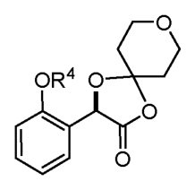

Patent Examination Benchmark Report
EP18712343.5 · PROCESSES FOR PREPARING ACC INHIBITORS AND SOLID FORMS THEREOF
来源 JSON：EP18712343-analysis.json
Application Preview
Claim Draft Preview
1192.P2F
37JD-246667-WO
What is claimed is:
A choline salt or co-crystal of CompoundI:
having a crystalline form characterized by an X-ray powder diffractogram comprising peaks at
Draft claim 1 from claims review JSON; pages 1
Draft OCR claim only; verify against the authority PDF before using as legal text.
Review status: 0/40 verified · Authority PDF Claims review HTML Claims draft JSON
Markush / Formula

Links
- EPO Register Main
- EPO Register Documents
- Espacenet Search
- Local main HTMLEP18712343-main.html
- Local doclist CSVEP18712343-doclist.csv
Original Application Files
案件元数据
| 法域 | EP |
|---|---|
| 申请号 | EP18712343.5 |
| 发明名称 | PROCESSES FOR PREPARING ACC INHIBITORS AND SOLID FORMS THEREOF |
| 申请人 | Gilead Sciences, Inc. |
| 申请日 | 2018-03-02 |
| 审查意见日期 | 2023-08-18 |
| 授权结果 | granted |
审查维度评分
| 维度/分数 | 字段描述 | 分析 | 原文 | 翻译 | LLM证据说明 |
|---|---|---|---|---|---|
新颖性 100 | 是否被单一现有技术直接公开，未被质疑通常为高分。 | 审查材料中没有显示针对新颖性的否定意见。相反，审查员在2021年9月21日附件中明确认定，权利要求主题符合Art.54 EPC的新颖性要求，理由至少在于当前步骤c)以及式(L)中间体。后续问题集中在说明书适应权利要求等清楚性/形式事项，申请人于2022年1月31日提交了修改后的说明书并表示案件已具备授权条件。2023年3月31日发出拟授权通知，2023年8月18日作出授权决定。因此，当前新颖性风险很低。 | 2. The claimed subject-matter is novel (Article 54 EPC)at least due to present step c)
and totheintermediateofformula(L). | 2. 所要求保护的主题是新的（《欧洲专利公约》第54条），至少是由于当前步骤c)以及式(L)的中间体。 | 该段为审查员对Art.54 EPC的直接结论，明确说明权利要求主题具备新颖性，并给出区别点为步骤c)和式(L)中间体。 |
创造性 100 | 按 EPO problem-solution/COMVIK 判断区别特征是否贡献技术效果。 | 审查意见已按EP problem-solution approach 明确认可创造性：审查员以D1作为最接近现有技术，因为D1公开式(J)产物；区别在于本申请采用不同合成路线，包括从式(R)格氏试剂出发、式(O)α-酮酸不对称还原为式(N)α-羟基酸，并涉及式(L)中间体。客观技术问题被表述为提供制备式(J)化合物的替代工艺，审查员基于说明书实施例6-8认为该问题已解决。D2虽公开式(N)α-羟基酸但经手性拆分获得，D3虽公开式(O)α-酮酸的不对称还原但得到不同对映体，式(L)中间体未被公开；因此即使结合现有技术，技术人员也不会得到权利要求工艺。后续仅有清楚性/说明书适配问题，申请人提交了修改说明书并最终授权。因此当前创造性风险很低。COMVIK不适用，因为权利要求涉及化学制备工艺的技术特征而非非技术特征。 | Thetechnicalproblemunderlyingthepresent applicationistheprovisionofalternative
processes to prepare the compound of formula (J).
Inviewoftheinformationprovidedinthedescription(examples6-8),itcanbeassumed
that this problem has been solved. D2 discloses the a-hydroxy acid of formula (N) but it
is obtained by chiral resolution of an o-methoxymandelic acid (D2, page 4013 -
experimentalpart).D3disclosestheasymmetricreductionofthea-ketoacidofformula
(O)butit leadstoadifferentenantiomericform(D3,table2entry4).Theintermediateof
formula(L)has never beendisclosed(eveninaracemicform).Therefore，even
combiningtheteachingofthepriorart,theskilledpersonwouldnotarriveattheclaimed
processes. Consequently, it is considered that the present application involves an
inventivestep(Article56EPC). | 本申请所基于的技术问题是提供制备式(J)化合物的替代工艺。鉴于说明书中提供的信息（实施例6-8），可以认为该问题已经得到解决。D2公开了式(N)的α-羟基酸，但其是通过邻甲氧基扁桃酸的手性拆分获得的（D2，第4013页，实验部分）。D3公开了式(O)的α-酮酸的不对称还原，但其导致不同的对映体形式（D3，表2，条目4）。式(L)中间体从未被公开过（即使以外消旋形式也未公开）。因此，即使结合现有技术的教导，技术人员也不会得到所要求保护的工艺。因此，认为本申请具备创造性（EPC第56条）。 | 该连续原文直接给出了最接近现有技术后的客观技术问题、问题已解决的依据、D2/D3及未公开中间体(L)的区别分析，并明确得出符合Article 56 EPC的结论。 |
充分公开/支持 80 | 说明书是否足以实施，权利要求是否有原始公开和技术支撑。 | 本维度未见审查员提出Art.83充分公开异议，也未见明确的Art.123(2)新增事项否定意见。审查过程中存在Art.84支持/清楚性问题：审查员要求说明书适应权利要求、删除与权利要求不一致或未覆盖的实施方式及claim-like clauses。申请人随后提交修改说明书，并主张说明书已适应修改后权利要求且未加入新 matter。EPO随后发出拟授权通知并最终授权，说明该Art.84支持问题已通过说明书修改克服。当前风险较低，但授权文本应继续确保说明书与权利要求1-4一致。 | FollowingexaminationofEuropeanpatentapplicationNo.18712343.5aEuropeanpatentwiththetitle
and thesupportingdocuments indicatedinthecommunicationpursuant toRule71(3)EPC(EPOForm
2004C)orintheinformation(EPOForm2004W,cf.Noticefrom theEPOdated8June2015,OJEPO
2015,A52)dated31.03.23isherebygranted inrespect of thedesignatedContractingStates. | 经对欧洲专利申请号18712343.5进行审查，依据2023年3月31日根据EPC规则71(3)发出的通知或信息中所列标题及支持文件，现就指定缔约国授予欧洲专利。 | 该最终授权决定表明审查部门接受了拟授权文本；结合此前Art.84说明书适应性问题，可判断支持/公开相关问题已被克服。 |
清楚性 80 | 权利要求术语、边界、简洁性和 Art.84 问题。 | 审查员在Rule 71(3)通知对应的附件中明确提出了Art.84清楚性/适应性问题，要求说明书适应权利要求、删除与权利要求不一致的说明书内容，并删除第119-130页的claim-like clauses。随后申请人提交了修订后的说明书并表示与修订权利要求一致，最终EPO作出授予决定，说明该清楚性问题已被克服。当前总体风险较低，但后续如仍存在未完全清除的类权利要求表述或与权利要求不一致的说明书段落，仍可能引发Art.84争议。 | Thedescriptionshouldbeadapted totheclaims(Article84EPC).Itisremindedthatin ordertomeettherequirementsofArticle84EPC(seealsoGuidelinesF-IV,4.3),the claims have tobe supported bythedescription.Any disclosure in the description inconsistentwiththeclaimsshouldbeexcised.Referencetoembodimentsnotcoveredbytheclaimsshouldbedeleted，unlesstheseembodimentscanreasonably be considered tobeusefulfor highlighting specific aspects of the claimed subject-matter.In suchcase,thefactthatanembodimentisnotcoveredbytheclaimsmust be prominently stated (the mere replacement of the word "invention"by "disclosure" or similarwordsisnotsufficient). | 说明书应当与权利要求相适应（Article 84 EPC）。谨提醒，为满足Article 84 EPC的要求（另见Guidelines F-IV, 4.3），权利要求必须得到说明书的支持。说明书中任何与权利要求不一致的公开都应删除。对未被权利要求涵盖的实施方式的引用应删除，除非这些实施方式可合理地视为有助于突出所要求保护主题的特定方面。在这种情况下，必须显著说明该实施方式不在权利要求范围内（仅将“invention”一词替换为“disclosure”或类似词语是不够的）。 | 该原文直接点明了Article 84下的清楚性/支持性问题，并要求删除不一致和未涵盖内容，表明曾存在但已在后续程序中被处理的清楚性风险。 |
适格性 100 | 是否落入 EP Art.52 排除主题，是否具有进一步技术效果。 | 权利要求1限定的是化学合成/制备方法，包含特定底物、base、reductant 和 catalyst 的具体接触步骤，属于明显的技术性主题，不落入EP Art.52常见排除主题。审查记录中可见的争议集中在新颖性、创造性和清楚性，而不是适格性；随后EPO发出 intention to grant，并最终作出 grant decision，说明该维度已通过。当前适格性风险极低，主要只剩后续若再改写权利要求时不要把具体化学步骤抽象成纯结果或概念性表述。 | Following examination of European patent application No.18712343.5 a European patent with the title and thesupportingdocuments indicatedinthecommunicationpursuant toRule71(3)EPC(EPOForm 2004C)orintheinformation(EPOForm2004W,cf.Noticefrom theEPOdated8June2015,OJEPO 2015,A52)dated31.03.23isherebygranted inrespect of thedesignatedContractingStates. | 经审查欧洲专利申请号 18712343.5 后，题为……的欧洲专利，以及在 31.03.23 的第71(3)条EPC通信中指明的支持文件，现已授予并适用于指定缔约国。 | 该段原文直接表明该申请已被EPO授予欧洲专利，说明在审查中未被Art.52适格性问题阻却；结合本案为化学制备方法，支持高分。 |
风险原因
- Thedescriptionshouldbeadapted totheclaims(Article84EPC).Itisremindedthatin ordertomeettherequirementsofArticle84EPC(seealsoGuidelinesF-IV,4.3),the claims have tobe supported by thedescription.Any disclosure in the description inconsistentwiththeclaimsshouldbeexcised.说明书应当适应权利要求（EPC第84条）。提醒申请人，为满足EPC第84条的要求（另见指南F-IV,4.3），权利要求必须得到说明书支持。说明书中任何与权利要求不一致的公开均应删除。该段明确显示审查员曾就Art.84支持性/说明书一致性提出异议，但性质是说明书适应权利要求的可修改问题。
- Anamendeddescriptionisfiledherewithtoreplace thedescriptionpresentlyonfile. Thedescriptionis adapted toconform totheamendedclaims.Theclausesonpages119- NonewmatterisaddedbythepresentamendmentsandtherequirementsofArt.123(2) EPCarethereforemet.随函提交修改后的说明书以替换当前在案说明书。说明书已修改以符合修改后的权利要求。本次修改未加入新内容，因此满足EPC第123(2)条的要求。该段显示申请人通过提交修改说明书回应Art.84支持问题，并明确主张不存在Art.123(2)新增事项。
- You areinformedthat theexaminingdivisionintendstogrant aEuropeanpatentonthebasisof theabove application,withthetext anddrawings and therelatedbibliographicdataasindicatedbelow.兹通知，审查部门拟基于上述申请，按照下列文本、附图及相关著录数据授予欧洲专利。拟授权通知说明审查部门已接受修改后的文本，支持/说明书适应性问题不再阻碍授权。
- FollowingexaminationofEuropeanpatentapplicationNo.18712343.5aEuropeanpatentwiththetitle and thesupportingdocuments indicatedinthecommunicationpursuant toRule71(3)EPC(EPOForm 2004C)orintheinformation(EPOForm2004W,cf.Noticefrom theEPOdated8June2015,OJEPO 2015,A52)dated31.03.23isherebygranted inrespect of thedesignatedContractingStates.经对欧洲专利申请号18712343.5进行审查，依据2023年3月31日根据EPC规则71(3)发出的通知或信息中所列标题及支持文件，现就指定缔约国授予欧洲专利。该最终授权决定表明审查部门接受了拟授权文本；结合此前Art.84说明书适应性问题，可判断支持/公开相关问题已被克服。
- Thedescriptionshouldbeadapted totheclaims(Article84EPC).Itisremindedthatin ordertomeettherequirementsofArticle84EPC(seealsoGuidelinesF-IV,4.3),the claims have tobe supported bythedescription.Any disclosure in the description inconsistentwiththeclaimsshouldbeexcised.Referencetoembodimentsnotcoveredbytheclaimsshouldbedeleted，unlesstheseembodimentscanreasonably be considered tobeusefulfor highlighting specific aspects of the claimed subject-matter.说明书应当与权利要求相适应（Article 84 EPC）。谨提醒，为满足Article 84 EPC的要求（另见Guidelines F-IV, 4.3），权利要求必须得到说明书的支持。说明书中任何与权利要求不一致的公开都应删除。对未被权利要求涵盖的实施方式的引用应删除，除非这些实施方式可合理地视为有助于突出所要求保护主题的特定方面。这是审查员对清楚性/说明书支持性的直接质疑，表明存在Art.84相关修改要求。
建议依据原文
- Thedescriptionshouldbeadapted totheclaims(Article84EPC).Itisremindedthatin ordertomeettherequirementsofArticle84EPC(seealsoGuidelinesF-IV,4.3),the claims have tobe supported by thedescription.Any disclosure in the description inconsistentwiththeclaimsshouldbeexcised.说明书应当适应权利要求（EPC第84条）。提醒申请人，为满足EPC第84条的要求（另见指南F-IV,4.3），权利要求必须得到说明书支持。说明书中任何与权利要求不一致的公开均应删除。该段明确显示审查员曾就Art.84支持性/说明书一致性提出异议，但性质是说明书适应权利要求的可修改问题。
- Anamendeddescriptionisfiledherewithtoreplace thedescriptionpresentlyonfile. Thedescriptionis adapted toconform totheamendedclaims.Theclausesonpages119- NonewmatterisaddedbythepresentamendmentsandtherequirementsofArt.123(2) EPCarethereforemet.随函提交修改后的说明书以替换当前在案说明书。说明书已修改以符合修改后的权利要求。本次修改未加入新内容，因此满足EPC第123(2)条的要求。该段显示申请人通过提交修改说明书回应Art.84支持问题，并明确主张不存在Art.123(2)新增事项。
- You areinformedthat theexaminingdivisionintendstogrant aEuropeanpatentonthebasisof theabove application,withthetext anddrawings and therelatedbibliographicdataasindicatedbelow.兹通知，审查部门拟基于上述申请，按照下列文本、附图及相关著录数据授予欧洲专利。拟授权通知说明审查部门已接受修改后的文本，支持/说明书适应性问题不再阻碍授权。
- FollowingexaminationofEuropeanpatentapplicationNo.18712343.5aEuropeanpatentwiththetitle and thesupportingdocuments indicatedinthecommunicationpursuant toRule71(3)EPC(EPOForm 2004C)orintheinformation(EPOForm2004W,cf.Noticefrom theEPOdated8June2015,OJEPO 2015,A52)dated31.03.23isherebygranted inrespect of thedesignatedContractingStates.经对欧洲专利申请号18712343.5进行审查，依据2023年3月31日根据EPC规则71(3)发出的通知或信息中所列标题及支持文件，现就指定缔约国授予欧洲专利。该最终授权决定表明审查部门接受了拟授权文本；结合此前Art.84说明书适应性问题，可判断支持/公开相关问题已被克服。
- Thedescriptionshouldbeadapted totheclaims(Article84EPC).Itisremindedthatin ordertomeettherequirementsofArticle84EPC(seealsoGuidelinesF-IV,4.3),the claims have tobe supported bythedescription.Any disclosure in the description inconsistentwiththeclaimsshouldbeexcised.Referencetoembodimentsnotcoveredbytheclaimsshouldbedeleted，unlesstheseembodimentscanreasonably be considered tobeusefulfor highlighting specific aspects of the claimed subject-matter.说明书应当与权利要求相适应（Article 84 EPC）。谨提醒，为满足Article 84 EPC的要求（另见Guidelines F-IV, 4.3），权利要求必须得到说明书的支持。说明书中任何与权利要求不一致的公开都应删除。对未被权利要求涵盖的实施方式的引用应删除，除非这些实施方式可合理地视为有助于突出所要求保护主题的特定方面。这是审查员对清楚性/说明书支持性的直接质疑，表明存在Art.84相关修改要求。
证据链
| 受影响权利要求 | 1, 2, 3, 4 |
|---|---|
| 审查轮次 | 1 |
引用先文 / 官网相关专利
| 序号 | 引用/相关专利 | 来源标记 | LLM证据说明 |
|---|---|---|---|
| 1 | D1 US20130123231A1 | Examined text examined_text | 该引用由审查文本直接提及，作为审查意见或检索意见中的对比文件线索。 |
| 2 | WO2017151816 | Examined text examined_text | Extracted from verified patent publication references in the benchmark input. |
说明书/支持证据
| 议题 | 位置/来源 | 原文 | 翻译 | LLM证据说明 |
|---|---|---|---|---|
| support_disc | FollowingexaminationofEuropeanpatentapplicationNo.18712343.5aEuropeanpatentwiththetitle
and thesupportingdocuments indicatedinthecommunicationpursuant toRule71(3)EPC(EPOForm
2004C)orintheinformation(EPOForm2004W,cf.Noticefrom theEPOdated8June2015,OJEPO
2015,A52)dated31.03.23isherebygranted inrespect of thedesignatedContractingStates. | 经对欧洲专利申请号18712343.5进行审查，依据2023年3月31日根据EPC规则71(3)发出的通知或信息中所列标题及支持文件，现就指定缔约国授予欧洲专利。 | 该最终授权决定表明审查部门接受了拟授权文本；结合此前Art.84说明书适应性问题，可判断支持/公开相关问题已被克服。 | |
| 21-09-2021_Annex_to_the_communication_E6P72X4A1242DSU_ocr.txt | Thedescriptionshouldbeadapted totheclaims(Article84EPC).Itisremindedthatin
ordertomeettherequirementsofArticle84EPC(seealsoGuidelinesF-IV,4.3),the
claims have tobe supported by thedescription.Any disclosure in the description
inconsistentwiththeclaimsshouldbeexcised. | 说明书应当适应权利要求（EPC第84条）。提醒申请人，为满足EPC第84条的要求（另见指南F-IV,4.3），权利要求必须得到说明书支持。说明书中任何与权利要求不一致的公开均应删除。 | 该段明确显示审查员曾就Art.84支持性/说明书一致性提出异议，但性质是说明书适应权利要求的可修改问题。 | |
| 31-01-2022_Reply_to_communication_from_the_Examining_Division_KZ2S33RG179A0ER_ocr.txt | Anamendeddescriptionisfiledherewithtoreplace thedescriptionpresentlyonfile.
Thedescriptionis adapted toconform totheamendedclaims.Theclausesonpages119-
NonewmatterisaddedbythepresentamendmentsandtherequirementsofArt.123(2)
EPCarethereforemet. | 随函提交修改后的说明书以替换当前在案说明书。说明书已修改以符合修改后的权利要求。本次修改未加入新内容，因此满足EPC第123(2)条的要求。 | 该段显示申请人通过提交修改说明书回应Art.84支持问题，并明确主张不存在Art.123(2)新增事项。 | |
| 31-03-2023_Communication_about_intention_to_grant_a_European_patent_LFKTH86419T52LQ_ocr.txt | You areinformedthat theexaminingdivisionintendstogrant aEuropeanpatentonthebasisof theabove
application,withthetext anddrawings and therelatedbibliographicdataasindicatedbelow. | 兹通知，审查部门拟基于上述申请，按照下列文本、附图及相关著录数据授予欧洲专利。 | 拟授权通知说明审查部门已接受修改后的文本，支持/说明书适应性问题不再阻碍授权。 |
审查材料证据
| 议题 | 位置/来源 | 原文 | 翻译 | LLM证据说明 |
|---|---|---|---|---|
| novelty | 21-09-2021_Annex_to_the_communication_E6P72X4A1242DSU_ocr.txt | 2. The claimed subject-matter is novel (Article 54 EPC)at least due to present step c)
and totheintermediateofformula(L). | 2. 所要求保护的主题是新的（《欧洲专利公约》第54条），至少是由于当前步骤c)以及式(L)的中间体。 | 该证据直接表明审查员未以单一现有技术否定新颖性，而是确认权利要求主题相对于现有技术具备新颖性。 |
| novelty | 18-08-2023_Decision_to_grant_a_European_patent_LL5RV7HT17OSPIK_ocr.txt | FollowingexaminationofEuropeanpatentapplicationNo.18712343.5aEuropeanpatentwiththetitle
and thesupportingdocuments indicatedinthecommunicationpursuant toRule71(3)EPC(EPOForm
2004C)orintheinformation(EPOForm2004W,cf.Noticefrom theEPOdated8June2015,OJEPO
2015,A52)dated31.03.23isherebygranted inrespect of thedesignatedContractingStates. | 经审查欧洲专利申请号18712343.5，依据2023年3月31日根据EPC规则71(3)发出的通知中所示文本和支持文件，现就指定缔约国授予欧洲专利。 | 最终授权决定支持案件整体已通过实质审查；结合前述明确的新颖性认可，说明新颖性障碍已不存在。 |
| inventive_step | 21-09-2021_Annex_to_the_communication_E6P72X4A1242DSU_ocr.txt | D1 is the closest prior art to the claimed subject-matter because it discloses thepresent
product of formula (J). In D1, said product is prepared by ring opening of a benzyl
epoxide and chiral resolution with a chiral preparative HPLC (D1, pages 173-174 | D1是权利要求主题的最接近现有技术，因为其公开了本申请的式(J)产物。在D1中，该产物通过苄基环氧化物开环并使用手性制备型HPLC进行手性拆分来制备（D1，第173-174页）。 | 该证据支持审查员采用问题-解决方案方法，并确定D1为最接近现有技术。 |
| inventive_step | 21-09-2021_Annex_to_the_communication_E6P72X4A1242DSU_ocr.txt | Thetechnicalproblemunderlyingthepresent applicationistheprovisionofalternative
processes to prepare the compound of formula (J).
Inviewoftheinformationprovidedinthedescription(examples6-8),itcanbeassumed
that this problem has been solved. | 本申请所基于的技术问题是提供制备式(J)化合物的替代工艺。鉴于说明书中提供的信息（实施例6-8），可以认为该问题已经得到解决。 | 该证据说明审查员认可客观技术问题为替代制备工艺，并认可说明书实施例足以证明问题已解决。 |
| inventive_step | 21-09-2021_Annex_to_the_communication_E6P72X4A1242DSU_ocr.txt | Theintermediateof
formula(L)has never beendisclosed(eveninaracemicform).Therefore，even
combiningtheteachingofthepriorart,theskilledpersonwouldnotarriveattheclaimed
processes. Consequently, it is considered that the present application involves an
inventivestep(Article56EPC). | 式(L)中间体从未被公开过（即使以外消旋形式也未公开）。因此，即使结合现有技术的教导，技术人员也不会得到所要求保护的工艺。因此，认为本申请具备创造性（EPC第56条）。 | 该证据直接表明审查员认为现有技术组合不能导向权利要求工艺，并明确认可Article 56 EPC创造性。 |
| inventive_step | 18-08-2023_Decision_to_grant_a_European_patent_LL5RV7HT17OSPIK_ocr.txt | FollowingexaminationofEuropeanpatentapplicationNo.18712343.5aEuropeanpatentwiththetitle
and thesupportingdocuments indicatedinthecommunicationpursuant toRule71(3)EPC(EPOForm
2004C)orintheinformation(EPOForm2004W,cf.Noticefrom theEPOdated8June2015,OJEPO
2015,A52)dated31.03.23isherebygranted inrespect of thedesignatedContractingStates. | 经审查欧洲专利申请号18712343.5，现依据2023年3月31日根据EPC规则71(3)的通知中所示文本和支持文件，就指定缔约国授予欧洲专利。 | 最终授权决定佐证创造性问题没有成为未解决的驳回障碍。 |
| support | 21-09-2021_Annex_to_the_communication_E6P72X4A1242DSU_ocr.txt | Thedescriptionshouldbeadapted totheclaims(Article84EPC).Itisremindedthatin
ordertomeettherequirementsofArticle84EPC(seealsoGuidelinesF-IV,4.3),the
claims have tobe supported by thedescription.Any disclosure in the description
inconsistentwiththeclaimsshouldbeexcised. | 说明书应当适应权利要求（EPC第84条）。提醒申请人，为满足EPC第84条的要求（另见指南F-IV,4.3），权利要求必须得到说明书支持。说明书中任何与权利要求不一致的公开均应删除。 | 该段明确显示审查员曾就Art.84支持性/说明书一致性提出异议，但性质是说明书适应权利要求的可修改问题。 |
| support | 31-01-2022_Reply_to_communication_from_the_Examining_Division_KZ2S33RG179A0ER_ocr.txt | Anamendeddescriptionisfiledherewithtoreplace thedescriptionpresentlyonfile.
Thedescriptionis adapted toconform totheamendedclaims.Theclausesonpages119-
NonewmatterisaddedbythepresentamendmentsandtherequirementsofArt.123(2)
EPCarethereforemet. | 随函提交修改后的说明书以替换当前在案说明书。说明书已修改以符合修改后的权利要求。本次修改未加入新内容，因此满足EPC第123(2)条的要求。 | 该段显示申请人通过提交修改说明书回应Art.84支持问题，并明确主张不存在Art.123(2)新增事项。 |
| support | 31-03-2023_Communication_about_intention_to_grant_a_European_patent_LFKTH86419T52LQ_ocr.txt | You areinformedthat theexaminingdivisionintendstogrant aEuropeanpatentonthebasisof theabove
application,withthetext anddrawings and therelatedbibliographicdataasindicatedbelow. | 兹通知，审查部门拟基于上述申请，按照下列文本、附图及相关著录数据授予欧洲专利。 | 拟授权通知说明审查部门已接受修改后的文本，支持/说明书适应性问题不再阻碍授权。 |
| clarity | 21-09-2021_Annex_to_the_communication_E6P72X4A1242DSU_ocr.txt | Thedescriptionshouldbeadapted totheclaims(Article84EPC).Itisremindedthatin ordertomeettherequirementsofArticle84EPC(seealsoGuidelinesF-IV,4.3),the claims have tobe supported bythedescription.Any disclosure in the description inconsistentwiththeclaimsshouldbeexcised.Referencetoembodimentsnotcoveredbytheclaimsshouldbedeleted，unlesstheseembodimentscanreasonably be considered tobeusefulfor highlighting specific aspects of the claimed subject-matter. | 说明书应当与权利要求相适应（Article 84 EPC）。谨提醒，为满足Article 84 EPC的要求（另见Guidelines F-IV, 4.3），权利要求必须得到说明书的支持。说明书中任何与权利要求不一致的公开都应删除。对未被权利要求涵盖的实施方式的引用应删除，除非这些实施方式可合理地视为有助于突出所要求保护主题的特定方面。 | 这是审查员对清楚性/说明书支持性的直接质疑，表明存在Art.84相关修改要求。 |
| clarity | 18-08-2023_Decision_to_grant_a_European_patent_LL5RV7HT17OSPIK_ocr.txt | DecisiontograntaEuropeanpatentpursuanttoArticle97(1)EPC FollowingexaminationofEuropeanpatentapplicationNo.18712343.5aEuropeanpatentwiththetitle and thesupportingdocuments indicatedinthecommunicationpursuant toRule71(3)EPC(EPOForm 2004C)orintheinformation(EPOForm2004W,cf.Noticefrom theEPOdated8June2015,OJEPO 2015,A52)dated31.03.23isherebygranted inrespect of thedesignatedContractingStates. | 依据Article 97(1) EPC授予欧洲专利。经审查欧洲专利申请第18712343.5号后，标题及在Rule 71(3) EPC通信（EPO Form 2004C）或信息（EPO Form 2004W，参见EPO于2015年6月8日发布的通知，OJEPO 2015,A52）中指明的支持文件，现已授予在所指定缔约国有效的欧洲专利。 | 授予决定表明审查已完成且申请最终获准，支持清楚性问题已被克服。 |
| eligibility | 27-04-2020_Amended_claims_filed_after_receipt_of_(European)_search_report_E4PS6VI82341DSU_ocr.txt | A method for preparingcompound of formula(J): (J), comprising the steps of: (a) contacting a compound of formula (R): OR4 MgBr (R) with a compound of formula (S): (S) under conditions sufficient toform acompound of formula (P): OR4 (P) or asolvate or a hydrate thereof, | 一种用于制备式(J)化合物的方法，包括以下步骤：(a) 将式(R)化合物 OR4 MgBr 与式(S)化合物在足以形成式(P)化合物 OR4(P)或其溶剂化物或水合物的条件下接触， | 该权利要求文本清楚限定了具体化学反应步骤、底物和条件，体现技术性制备方法，不是抽象规则或排除主题。 |
| eligibility | 18-08-2023_Decision_to_grant_a_European_patent_LL5RV7HT17OSPIK_ocr.txt | Following examination of European patent application No.18712343.5 a European patent with the title and thesupportingdocuments indicatedinthecommunicationpursuant toRule71(3)EPC(EPOForm 2004C)orintheinformation(EPOForm2004W,cf.Noticefrom theEPOdated8June2015,OJEPO 2015,A52)dated31.03.23isherebygranted inrespect of thedesignatedContractingStates. | 经审查欧洲专利申请号18712343.5后，题为……的欧洲专利以及在31.03.23第71(3)条EPC通信中指明的支持文件，现已授予并适用于指定缔约国。 | 最终授权决定表明该申请已通过EPO审查流程；若存在Art.52适格性障碍，通常不会以该状态获准授权。 |